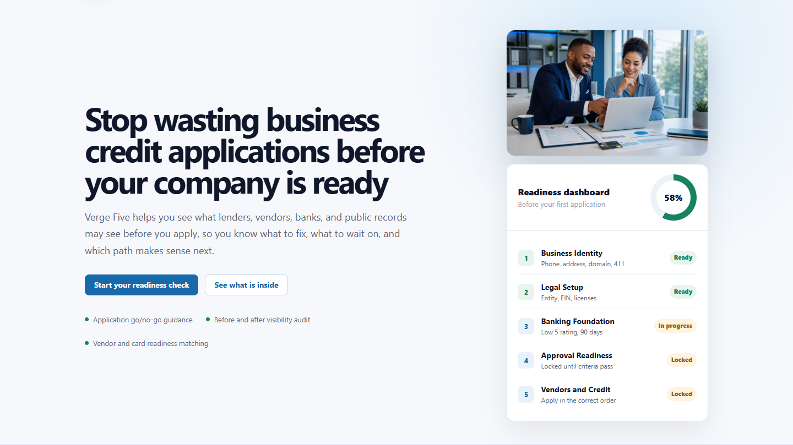
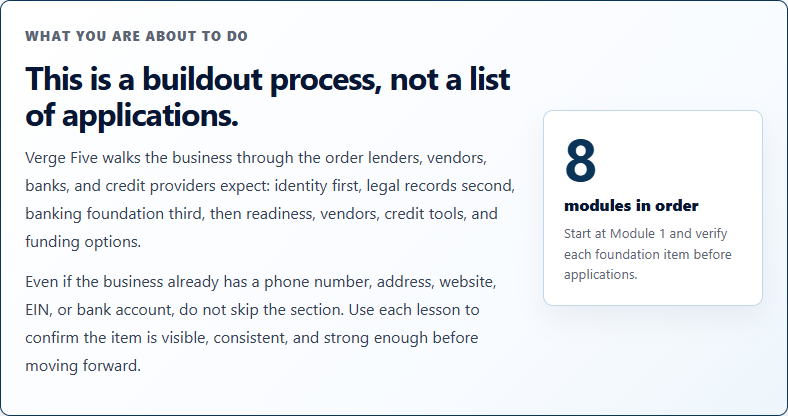
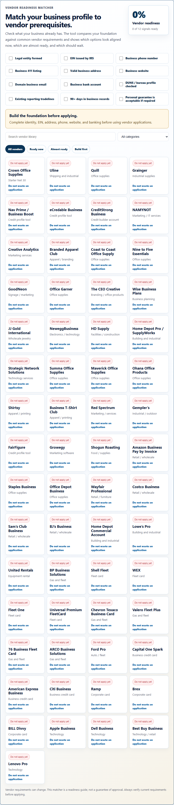
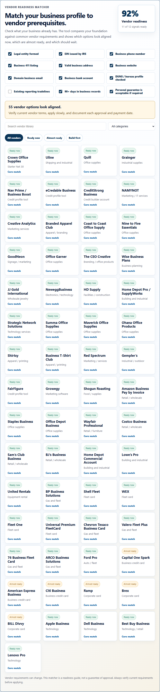
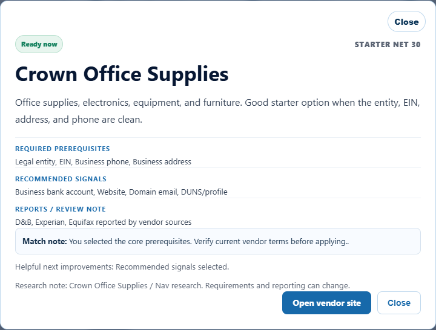
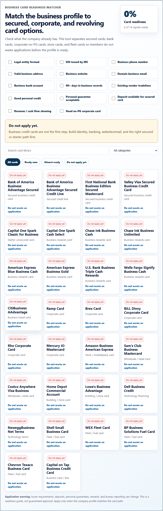
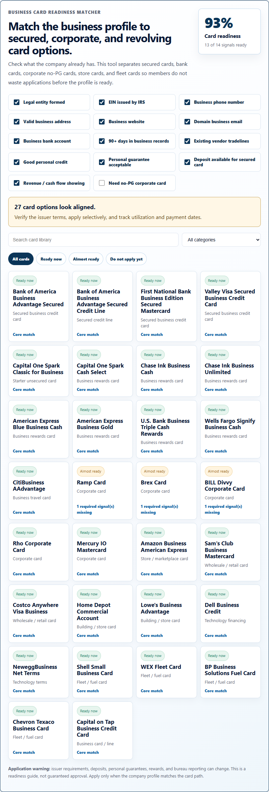

For business owners who have been burned
Verge Five shows what needs to be ready before you apply anywhere.

The part gurus skip
The platform puts identity, legal records, banking, readiness, vendors, cards, and funding in the correct order.

Module 6 / Net 30
Members check what the business already has, then see which vendors are aligned, close, or should wait.

The signal changes the recommendation

Vendor details
The larger card explains prerequisites, recommended signals, reporting notes, and match warnings.

Module 7 / Credit tools
Secured cards, store cards, fleet cards, bank cards, and no-PG corporate cards all look for different signals.

After matching the profile

What Verge Five dispels
From vision to venture
Start with the roadmap, verify the signals, and move forward when the business is actually ready.
vergefive.com